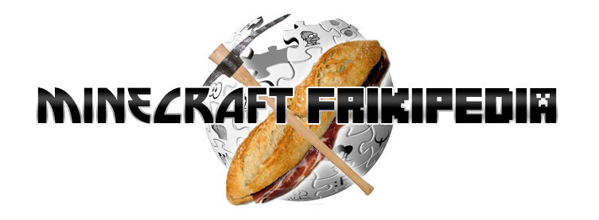

Minecaft:Guia
De:
La Frikipedia
, la enciclopedia
extremadamente
seria.

Minecraft Frikipedia
Portada
|
Foro
Guía
Rangos del servidor
Comandos de cada rango
Normas del servidor
Tutoriales para empezar
Autor(es):
CVP97
Frikipedia 2005-2016, Licencia
GFDL 1.2
- Extraído por FrikiLeaks
 De: La Frikipedia, la enciclopedia extremadamente seria. De: La Frikipedia, la enciclopedia extremadamente seria.
De: La Frikipedia, la enciclopedia extremadamente seria. De: La Frikipedia, la enciclopedia extremadamente seria.